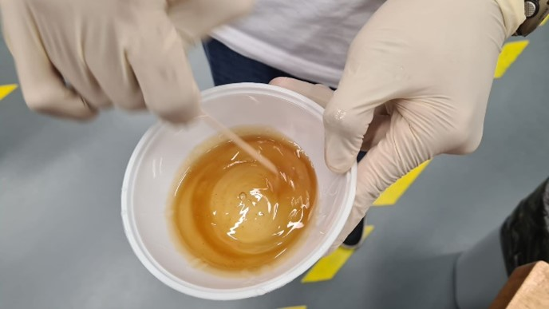

Molding and Casting:
Assignment
For our assignment, we were assigned to design a mold and cast a part from the mold.Molding:
For molding, we started off by wearing plastic gloves to protect our hands. Next we weight the mixture of ratio 1:1. This was important as the mold may not cure properly if the ratio is off by too much. There were many options to choose for the mold material but we ended up using the 30 Series due to its availability at that moment.
Next we had to stir the mixture carefully and thoroughly, ensuring that the mixture is one solid colour. Following this, we used the degassing machine which is basically a mini vacuum tank to take out any air that was trapped in the mixture from the stiring process.
Once we were done degassing, we carefully poured the mixture into our mold that we did previously.
We let the molds dry under a table over the weekend eventhough the cure time was only 4 hours or so. I then carefully broke the foam to reveal our finished molds.
The mold turned out pretty good in my opinion. It does have a rough texture to its surface but it is probably because of the particular series of mixtures that we picked. Nonetheless, I am happy with how it turned out.
Casting:
Onto casting. We are going to use epoxy resin so the process is similar to making the mold. For this specific epoxy, the ratio was 3:1, so we had to carefully pour the hardener and resin into a plastic cup before mixing them well.
Next, we degassed the epoxy mixture by using the degasser machine. We only had 10min to do the entire casting process so we had to be quick. 
You can see the bubbles rising from the mixture here. It seemed like a never ending process as the bubbles kept rising. However, we had to speed up things as the cure time was reaching soon. So, afterwards we gently poured the degassed mixture into our molds which where left to cure.
Here you can see the final result after a couple days of curing. Its a little hard to see but the cast turned out better than I had imagined. It has a rough suface which I quite like.